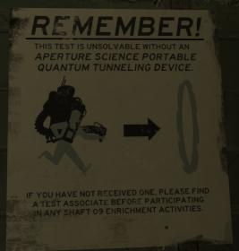

Definately Black Mesa, because it’s superior to Aperture Science in every possible way except for A.I. technology.
Working with hundreds of scientists with Hal Robins’ voice? Working with a robot with Ellen McLain’s voice? Nope. Too difficult. I choose Cerberus from Mass Effect. Martin Sheen is their leader!
Don’t Bump this Thread
Mass Effect is unrelated to this Thread.
You were Not Funny.
Well, Black Mesa’s portals are powered by machines that has to be built where they want to teleport, unless it’s Xen, and Aperture just needs to shoot two portals and go through them. Both of them has elevators, of course, and as you said Aperture has A.I., and Black Mesa stole from Aperture which makes me wonder how much of their tech that’s actually theirs. For example in the Lab Rat comic, where there is an HEV charger and a Health Charger on the wall, a gravity gun on the table and a combine Health Charger in the corner. So I’d say Aperture is superior to Black Mesa. But we all have different opinions, and I accept yours.
Apature may have superior technology than Black Mesa in Portal, but we still don’t know when Portal takes place, meaning that maybe, if we saw the technology of Black Mesa at the time of Portal, it might be better.
^ You mean after it was nuked … ?
Firstly, ApERture
Secondly, Portal is set in 2010 from what I’ve read, and Half-Life in 2000-2009, so based on what year exactly it is, it’s either just about ten years, about five years or about 1-2 years older than Aperture’s. And even in their 1970’s-80’s, Aperture had their first prototype of the Portal gun, which further proves that they’re better. And again, Black Mesa stole from them, which kind of proves that they were desperate for goverment fundings, which also points at they not having that advanced tech.
Er,wasn’t there a timeline by Valve that said that GLados was turned on 8 days before the Black Mesa Incident? Also, wasn’t there a voice line about Glados saying that there were worse things outside(AKA, the Combine Invasion)
Also, just because the Black Mesa and Aperture had HEV Charges and Health stations, doesn’t mean that BM stole from Aperture. There is a government HEV suit, and this would just mean that the HEV tech is either from a privately funded 3rd Party, from the government, or something along the lines.
Along with your claims of Teleportation: Could the Portal gun teleport from one dimension to the other?
Oh er… oh yeah.
But anyway, I don’t think that Aperture was more advanced than Black Mesa. I think they were pretty even. But it is a good point that Black Mesa could travel between dimensions while Aperture science could only travel across the room.
Black mesa cause you will have chance of survival. Also you can hunt yourself headcrab pet. :3
What we have seen of Aperture’s technology is more self-contained. The Portal gun is a small apparatus (improved from that silhouette of the original bulky 1950’s model back at the bottom of Shaft 09, remember?). The teleportation devices we see at BM (along with the ones we see in HL2) may be able to send things farther, but the devices themselves aren’t going anywhere. The ASHPD appears to be a more advanced piece of technology in it’s construction (IMO). I haven’t seen a BMHPD yet, so Aperture has reason to be proud.
I suppose each has advantages and disadvantages, but at least the Portal gun is portable (get it?).
Also, we don’t know what’s on the Borealis, or why it was teleported to the Arctic. Perhaps it was a large scale teleoportation experiment/device/technology- we still don’t know, of course. My point is that Aperture, IMHO, must have accomplished something which at least rivals (but probably surpasses) any of the other teleportation technologies in the HL universe, but made a slight error, and the rest is history. After all, the Combine are certainly interested in it…
My take is this: Aperture has the best technology and, unfortunately, the worst luck. Now, which one would I want to work for?
It seems Aperture must have saved itself in the 90s once it had new leadership. How, I don’t know, but whatever it was it kept them going until 200x (and likely beyond, had there been no disasters from either company). I’d probably go to Aperture, since I believe they have better technologies. Imagine what you could do with ASHPD technology if you could scale it up- make portals which don’t collapse that easily. All you would need to do is walk through! Forget about problems like disfigured cats or “slow teleports”. Even if larger Portals aren’t easily moved around, they would be easier to travel through. Better yet, you could transport cargo through them! The possibilities are endless!
EDIT: …it was a late 50’s model, I guess. Aperture’s been working on it for so long- no wonder the ASHPD is so compact!
The ASPQTD. I think I would know whether I received one based on whether or not my back is broken.
They use the term quantum tunneling; I don’t think it has anything to do with wormholes (or am I mistaken?) I think it’s being used inappropriately from a scientific standpoint. I do remember hearing a theory about stretching wormholes from a subatomic size to something in which a person can fit through (by adding energy). Maybe that’s the principle on which the Portal gun operates; someone should ask Valve. 

Not as refined as Aperture’s device, and not canon, but https://half-life.wikia.com/wiki/Displacer_Cannon
Well in HL1 we learned about the Lambda Facility, which was top secret. Who knows how many other secret facilities there are in Black Mesa, each with more secret technology.
Teleportation: No it couldn’t, I can admitt that. But Aperture’s was safer, you didn’t get attacked by aliens when you went through a portal.
Stealing: So how do you explain the Gravity Gun then?
Black mesa has Displacer Canon which doesn’t need a suitable surface, and can teleport you anythere, even between dimensions, provided you type the coordinates. And as for stealing, the combine health charger is likely an easter egg , old health charger most likely isn’t created by any of the facilities, as is the HEV charer (it has a TM symbol), and HEV suit itself was very likely created or atleast, upgraded by BM , because they have a LARGE number of working MK 4 units and in Decay , Gina Cross talks about testing HEV MK 5 prototype. As for Gravity Gun , it’s very likely that it’s an easter egg , because it requires Xen crystal to work like in HL2. But I do agree with you that BM stole Zero Point Energy technology from AS , but they ( or at least Eli ) improved upon it. But everyone is free to have their own oppinion.
Ok, I’ve done some more research throughout the games + some thinking, and I have more arguments of stealing. Here’s my exact notes:
“I don’t think that Black Mesa bought the HEV suit, since the Lambda brand is on it. And if they did buy it, Kleiner wouldn’t know how to build the mark V. So I guess that Lambda builded it and that Kleiner got his hands on some blueprints before he escaped. They probably based the mark V on the combine suits, which are based on the Mark IV. This also means that Black Mesa stole either blueprints of mark I, II or III to develop it with the Lambda brand and further from Aperture’s design. Maybe in Lab Rat they were working on the mark II or III, developing it for better Portal/Gravity Gun lifting. Or they simply combined the Gravity Gun tech to the Quantum Tunneling Devide, who (based on its size) would need the mark I or II for heavy lifting.”
Thinking further, they might have used the mark I and II for the QTD and mark III for the Gravity Gun, but then saw them as unnessesary when they combined the two devices into a lighter Portal Gun and stored both the Gravity Gun and the Quantum Tunneling Device, also the first three HEV suits on the Borealis, and somehow Black Mesa got blueprints (bossibly by hacking into their system) and builded their own verision.
After that, the combine blew up the blast door to the Borealis and stole it, along with its technology. That should have been proven quite easy, since Aperture had at that time allready moved closer to the surface and sealed the entrances to old Aperture. After that, Breen developed the HEV suit from Black Mesa to the CP suits and used the advanced health charger that they found on Borealis (also seen in Lab Rat) for the new suits. Then either citizens broke in to the citadel or Kleiner/Eli/Alyx hacked into their computer system and stole Apertures blueprints for the Gravity Gun and the combine’s blueprints for the CP suits. Or they used Barney’s suit for research.
God damnit people let this thread die, it’s all a matter of opinion, one is not better than the other.
Lockheed Martin
Maybe Black Mesa… That was a joke. Haha. Fat chance.